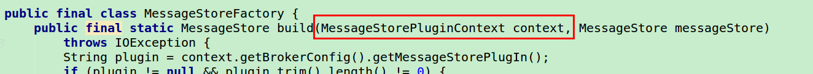
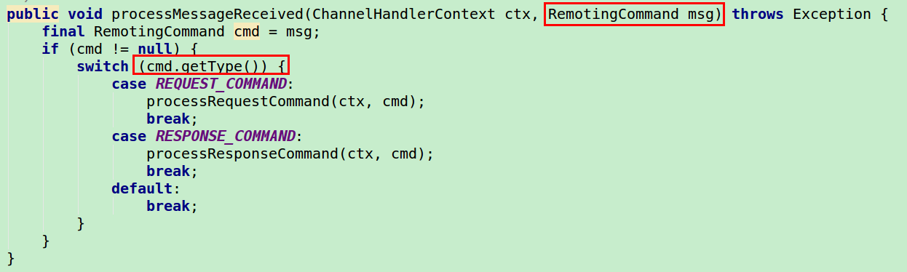
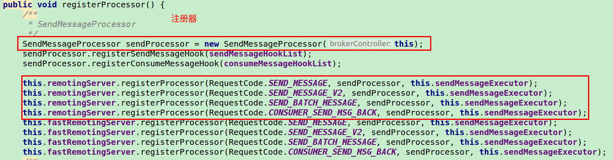
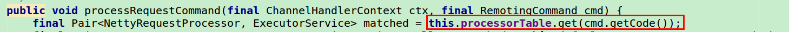

RocketMQMap + Flag 标志位扩展消息 Message 的设计：
MapflagContext 扩展
enum + code + 注册器RocketMQ 服务端在收到客户端发送过来的消息之后，根据 cmd.getType() 来调用不同的函数:

注册处理器:

注册处理器本质上就是放到一个 Map 里面了:
1 | protected final HashMap<Integer/* request code */, Pair<NettyRequestProcessor, ExecutorService>> processorTable = |
收到对应的请求后，再根据一个叫做 code 的请求类型来从注册表里面取出相应的处理器:
